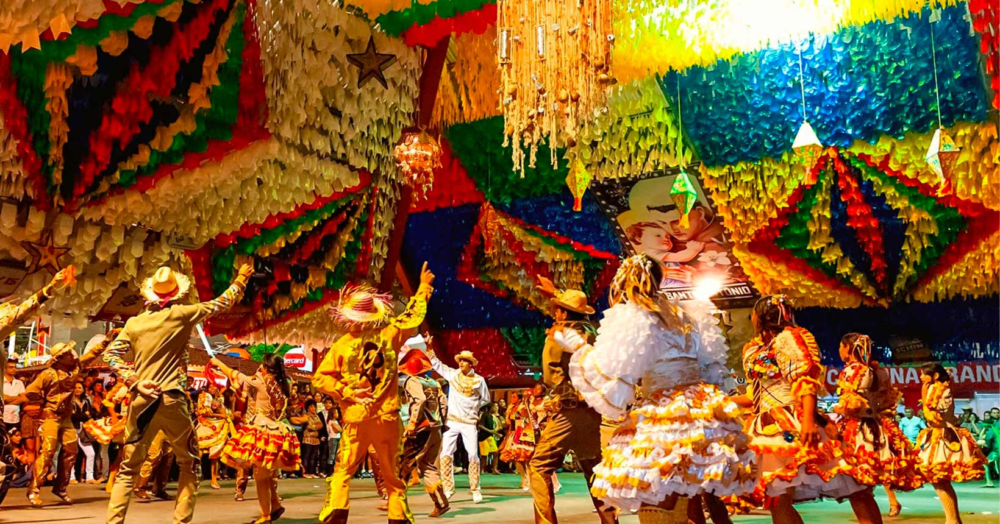

São João is one of the most popular festivals in Brazil, and Campina Grande is known for having the biggest São João in the world! During the month of June, the city transforms into one big stage for music, food, and fun. The streets are decorated with colorful flags and lights, and there are many events happening all over the city.
If you are planning to visit Campina Grande during São João, it is important to prepare in advance. The city gets very busy during the festival, so it is essential to have all the information you need to make the most of your visit. This is where the Soul João project comes in!

Soul João is a project developed to help tourists who want to experience the complete São João in Campina Grande. Our website is a reliable source of up-to-date information about the events happening in the city during the festival. From live shows to cultural presentations and traditional festivities, we keep you informed so you don't miss any opportunity to have fun.
Our goal is to facilitate the planning of your trip by providing all the essential information in one place. Through Soul João, you will have access to personalized itineraries, suggesting the best places to visit and the most interesting activities to participate in during the festival. Whether you are looking for live music, dancing, typical foods, or simply want to have fun in a festive atmosphere, Soul João has everything you need.

In summary, Soul João is your complete guide to making the most of São João in Campina Grande. With up-to-date information, valuable tips, and an active online community, we are here to make your experience unforgettable. Whether you are a local resident or a tourist from out of town, Soul João is by your side, accompanying you in every step of this exciting party. Get ready to dive into the culture and joy of São João in Campina Grande with us!